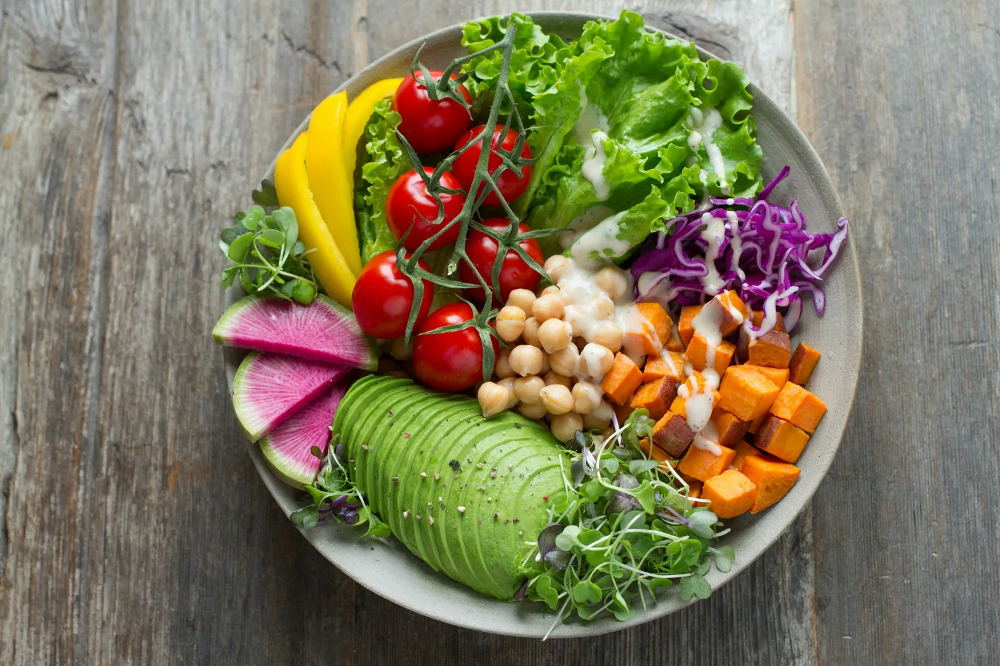

Diet and fluids
A practical renal diet for Indian kitchens
How to manage salt, potassium and phosphorus without giving up the food you love.

Food is one of the parts of kidney care you control every day, and it is also one of the most confusing. Advice found online is often written for other countries and other diets. Here is how we help patients in Chennai and Bengaluru adapt the meals they already cook. Your own targets depend on your blood results, so treat this as a starting point to discuss with your dietitian.
Salt: the first and biggest change
Less salt means less thirst, lower blood pressure and less fluid build-up between sessions. Most people on dialysis should aim for under 5 g of salt a day, about one level teaspoon in total. The surprise is where it comes from: pickles, papad, salted snacks, instant noodles, ready masala mixes, bakery bread and restaurant food. Cook from scratch where you can and add flavour with lemon, tamarind, ginger, garlic, curry leaves, coriander and fresh spices instead. Avoid salt substitutes, because most are made from potassium.
Potassium: know your high and low choices
High potassium can upset the heart rhythm, so your monthly blood test matters. Coconut water, bananas, oranges, dried fruit, potatoes, tomatoes in large amounts, drumstick and yam are high. Apples, pears, papaya in small portions, guava, cabbage, cauliflower, ridge gourd, bottle gourd and beans are lower.
How to leach vegetables
- Peel and cut vegetables into small pieces.
- Soak them in plenty of warm water for at least two hours.
- Drain, then boil in fresh water and throw that water away before cooking your dish.
Phosphorus: watch dairy and additives
Too much phosphorus pulls calcium from the bones and hardens blood vessels. Milk, curd, paneer and cheese contain it, so keep to the portions your dietitian suggests. Colas, processed meats and many packaged foods contain phosphate additives that are absorbed almost completely; look for ingredients starting with phos. If you are prescribed phosphate binders, take them with the first bites of each meal, not afterwards.
Protein: more, not less, on dialysis
Dialysis removes protein, so most patients need more of it than before. Good choices are egg whites, chicken, fish and measured portions of dal and paneer. Spread protein across the day and include some at every meal. If your appetite is poor, tell us; small, frequent meals or a renal supplement can help.
An everyday renal plate
- Half the plate: leached vegetables such as cabbage poriyal or beans thoran.
- A quarter: rice, phulka or idli, made without added salt where possible.
- A quarter: protein, for example two egg whites, a piece of fish or a small bowl of thick dal.
- A small side of fresh salad with lemon, and fruit such as half an apple or a guava.
Your dietitian will adjust these suggestions to your blood results, diabetes and fluid allowance.